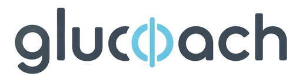
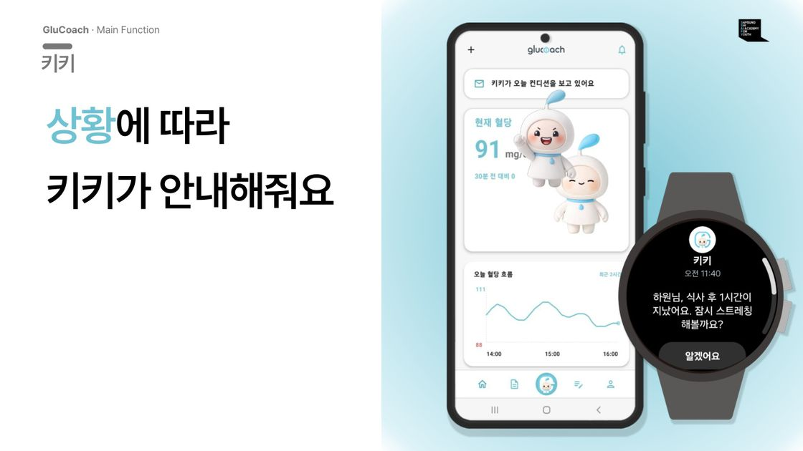
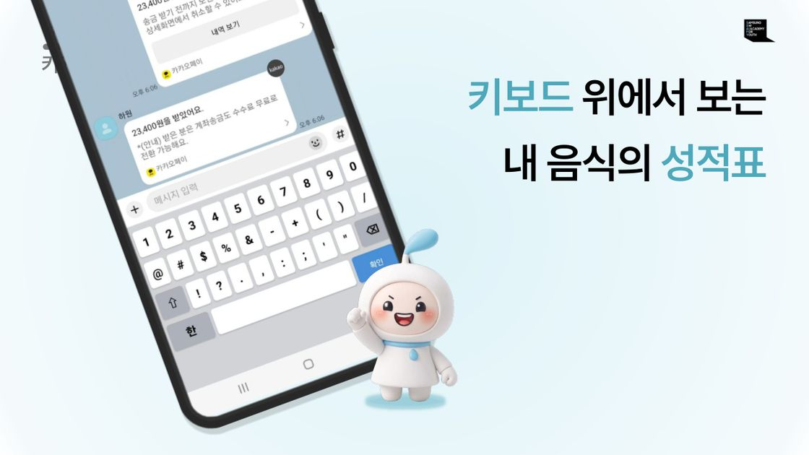
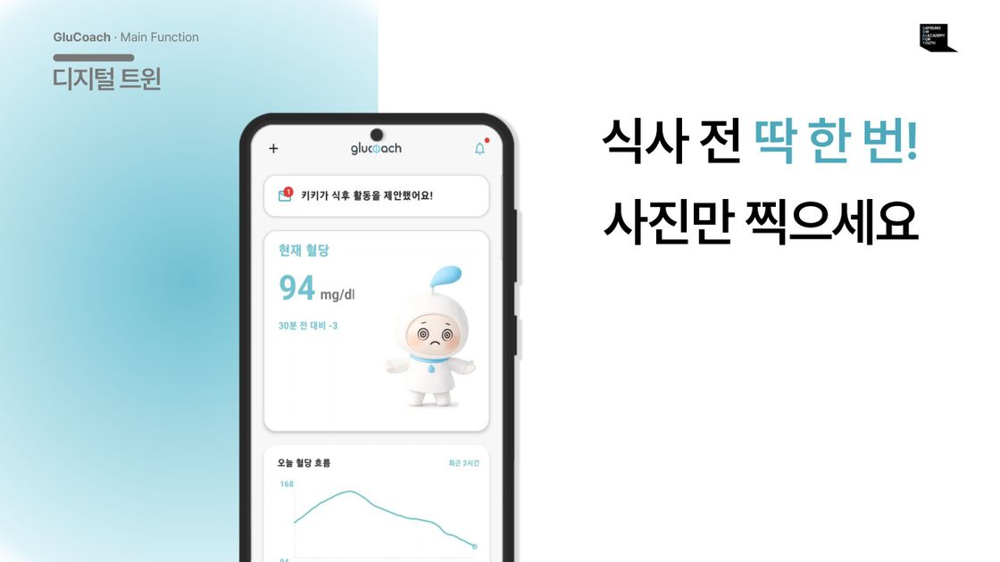
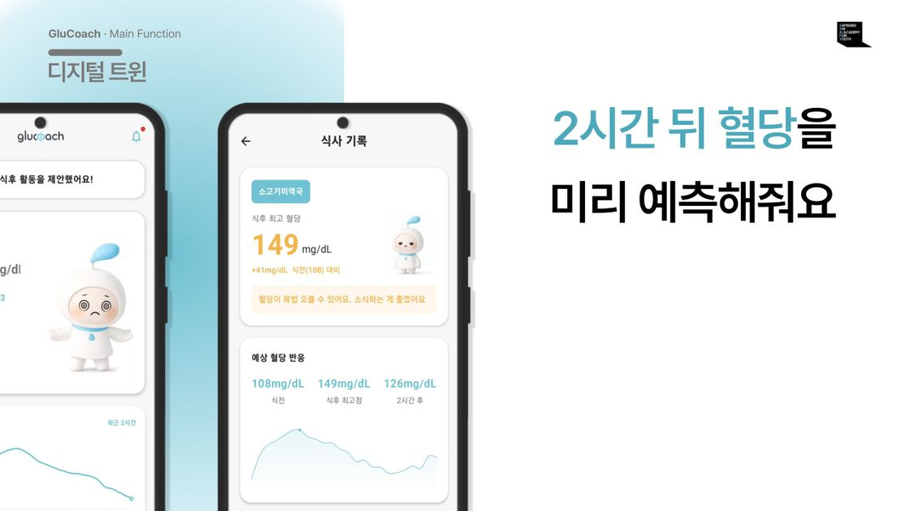
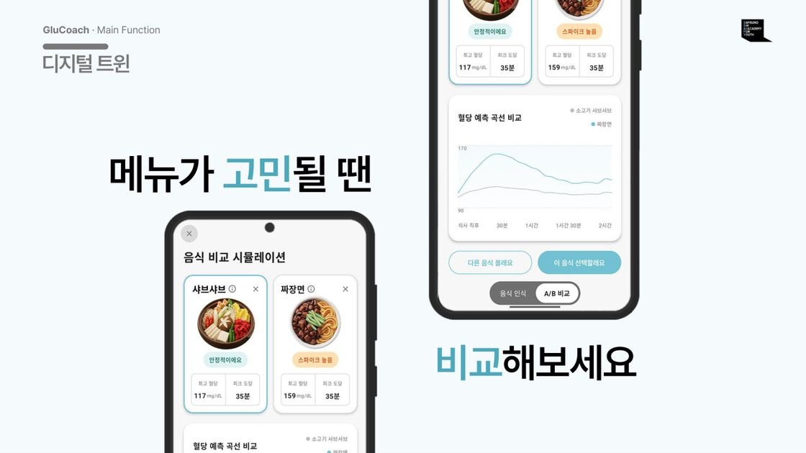
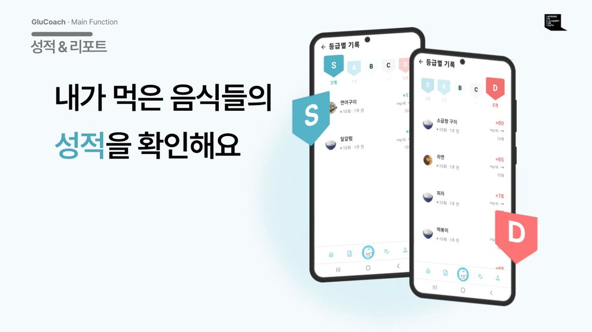
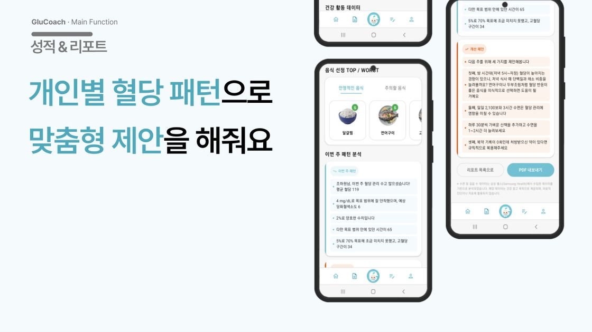

팀장 · 기획
- 서비스 기획 전체 담당, 최종 발표 직접 진행
- 기능을 넓힌 이유와 멘토 동의 내용을 문서로 남기고 팀에 공유
- 프로젝트 중반 멘토가 바뀌었을 때 기존 자료로 진행 경과를 다시 설명해 인수인계
- 음성 호출 · 음식 평가 · 혈당 예측 · A/B 비교가 하나의 시나리오로 이어지게 시연 흐름 조율
혈당 그래프 화면 요청을
행동을 코칭하는 AI Agent로 키웠어요.
파트너 기업이 자체 개발 중인 웨어러블 당뇨 진단 디바이스의 AI 연계 과제였어요. 요청은 측정한 혈당을 그래프로 보여 주는 화면까지였지만, 직접 혈당을 재 보고 당뇨를 앓는 팀원 부모님을 인터뷰한 뒤 다음 행동까지 제안하는 개인 맞춤형 건강관리 서비스로 범위를 넓혔어요.

개발 중인 기기는 쓸 수 없어서 시중 혈당측정기를 직접 사서 재 보고, 당뇨를 앓는 팀원 부모님도 인터뷰했어요. 수치를 볼 수 있어도, 그걸 보고 무엇을 할지는 별개의 문제였어요. 직접 재 보니 두 가지가 불편했어요. 어떤 음식이 내 혈당에 영향을 주는지 알기 어려웠고, 계속 신경 쓰지 않으면 관리를 잊게 됐어요. 그래서 개인 맞춤 안내, 스마트워치 연동, AI Agent를 멘토에게 제안했고, 필요성을 설명해 동의를 얻었어요. 서비스 기획은 팀장인 제가 처음부터 끝까지 맡았어요. 기업이 주기로 한 혈당 데이터는 끝내 받지 못해, 팀은 논문으로 발표된 혈당 생리 모델을 분석해 시뮬레이터를 만들고 시연용 데이터를 마련했어요.







혈당 · 수면 · 식사 · 활동량을 최대한 분석해 수치와 함께 알려주는 게 개인화의 핵심이라고 생각했어요.
에이전트 응답을 반복 테스트해 보니 설명이 길어질수록 다음에 뭘 해야 할지가 흐려졌고, 매번 개입하니 불필요한 알림만 늘었어요.
'얼마나 많이'보다 '언제, 무엇을'을 기준으로 바꿨어요. 데이터는 종합하되 메시지는 짧게, 추가 알림은 필요할 때만 보내도록 판단 구조를 다시 짰어요.
AI 응답을 TTS로 읽어 주는 동안 음성 인식이 그 소리를 'Hi Kiki' 호출로 잘못 알아들었어요.
TTS 재생 중에도 호출어 인식이 켜져 있었고, 시연장의 한국어 잡담도 호출어로 오인식될 수 있었어요.
재생 중에는 호출어 인식을 막고 끝난 뒤 400ms 여유를 뒀어요. 호출어 모델은 영어로 바꾸고, 알림 볼륨이 0인 기기에서도 들리도록 TTS 출력 채널을 음악 채널로 옮겼어요.
인프라를 맡았지만 배포하는 동안 새 서버가 제대로 떴는지 확인할 방법이 없었어요.
새 버전을 기존 서버 자리에 바로 올리는 방식이라, 문제가 있는지는 배포가 끝난 뒤에야 알 수 있었어요.
Blue/Green 배포를 도입해 대기 환경에 먼저 띄우고, 상태 점검 주소에서 정상 응답을 확인한 뒤 트래픽을 넘겼어요.
다만 전환에 실패하면 원인 로그가 컨테이너와 함께 지워져 오류를 추적하기 어려웠어요. 이 경험으로 교보재 신청 통합 플랫폼에서는 배포 로그를 남기는 파이프라인을 만들었어요.